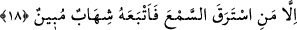
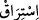
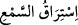

18. Ancak kulak hırsızlığı eden müstesna. Onun da peşine açık bir alev sütunu
düşer.
“Ancak kulak hırsızlığı eden müstesnâ” Buradaki kulak hırsızlığı eden, kovulmuş
şeytanlardandır. Ancak bu, ‘koruma’ fiilinin gökyüzünün şeytanların mutlak mânâdaki
taarruzlarından ve orada olup biten şeylere az da olsa vâkıf ve muttalî olma isteklerine
mâni olma şeklinde tefsir edilmesi durumunda geçerlidir.
İfâde, “Fakat kim kulak hırsızlığı ederse” şeklinde de anlaşılabilir. Bu da ‘koruma’
fiilinin, şeytanların gökyüzüne girişini veya orada tasarrufta bulunmalarına mâni olma
şeklinde açıklanması durumunda geçerlidir.
“__WORD__ (kulak hırsızlığı)”, gizlice dinlemek demektir. Nitekim el-Kâmus’ta böyle
denilir.
ise kulağın gizlice çalması demektir. Şeytanların aralarındaki cevher
ilişkisinden dolayı gökyüzündekilerden az miktarda da olsa bir şeyler kapmaları, kulak
hırsızlığı işine benzetilmiştir.
“Onun da peşine” son derece “açık bir alev sütunu” yakıcı bir kor “düşer” onu
kovalayıp yakalar.
Bir ay geldi, zulmet pazarını aydınlattı
Bir gül açıldı, diken korkusu sona erdi
İbn Abbas (r.anhümâ)’dan nakledilen şu rivâyet de bunu desteklemektedir: “Önceleri
şeytanlara semâlar perdelenmiş değildi. Hz. Îsâ (a.s) doğunca şeytanlara üç semâ
kapatıldı. Hz. Muhammed (s.a.) doğduğu zaman ise, parlak ateş korları ile bütün
semâlar şeytanlara yasaklandı. Kimin hırsız olduğu, gizli bir yerde saklı bir şeyi bulma
ve benzeri şeyler gibi günümüzde bazı insanların ağızlarında dolaşan cin haberleri ise
cinlerin yeryüzünde gördükleri fakat bizim göremediğimiz haberlerdir. İleride olacak
bir şeyi haber verirlerse yalan olur.” Âkâmü’l-mercân’da böyle denilmektedir.
Bir hadiste şöyle buyrulur: “Melekler gökyüzünün alt kısmına inerek gökte
hükmedilen şeyleri tekrarlar. Şeytanlar da buna kulak hırsızlığı yapıp kâhinlere
telkin ederler. Onlar da buna bin yalan katarak insanlara söylerler.”[57]
Bir tefsirde şöyle denilir: “Şeytanlar birbirlerinin üzerine binerek bize en yakın
semâya kadar çıkarlar. Yahut itâatten çıkmış (mârid) şeytanlar buraya yükselir, diğerleri
de semânın altında bir yerde kalırlar. Bunlar, bir şey duyduğu zaman hemen altlarında
bulunanlara: ‘Şöyle şöyle hükmedildi!’ derler. Alttakiler de bunu kâhinlere haber
vermek üzere oradan hızla uzaklaşırlarken kulak hırsızı olan şeytanlar ateş korları ile
vurulurlar. Ancak onlara bizzât yıldızlar atılıyor değildir. Çünkü onlar gökyüzündeki
yerlerinde oldukları gibi kalmaktadırlar. Onlara atılan şey ise bir ateş parçasından
başka bir şey değildir. Fakat bu kor olduğu gibi kalmakta, kendisinde hiçbir eksilme